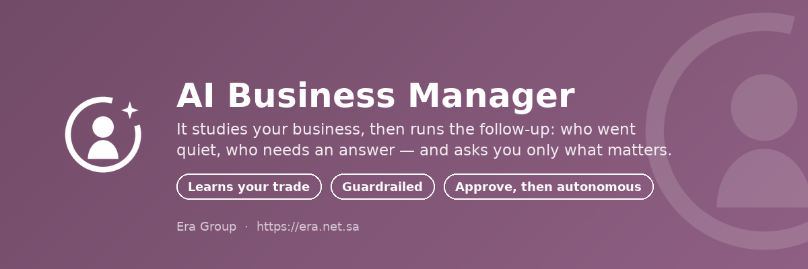

<section class="oe_container">
    <div class="oe_row oe_spaced" style="text-align:center; padding:32px 16px;">
        

        <h1 style="font-size:38px; font-weight:600; color:#1f2d3d; margin:0 0 10px;">
            AI Business Manager
        </h1>
        <h2 style="font-size:21px; font-weight:300; color:#714B67; margin:0 0 18px;">
            It learns what your business is, then looks after the customers you do not have time for.
        </h2>

        <h3 dir="rtl" style="font-size:28px; font-weight:600; color:#1f2d3d; margin:0 0 8px;">
            المدير الذكي للأعمال
        </h3>
        <h3 dir="rtl" style="font-size:18px; font-weight:300; color:#714B67; margin:0 0 22px;">
            يتعلّم طبيعة نشاطك، ثم يتابع العملاء الذين لا يتسع وقتك لهم.
        </h3>

        <p style="font-size:16px; line-height:1.7; color:#5b6b7c; max-width:800px; margin:0 auto 12px;">
            Most small businesses do not fail loudly. They fail quietly: a customer stops
            ordering and nobody notices, an email waits four days, a lead goes cold. Those
            are not hard problems — they are attention problems, and attention is exactly
            what an owner running everything does not have. This module hires the attention
            back. It surveys your database to work out what you actually sell and who your
            customers are, writes its own brief from what it finds, and from then on watches,
            answers and follows up — bringing you one weekly page instead of a hundred small
            decisions.
        </p>
        <p dir="rtl" style="font-size:16px; line-height:1.9; color:#5b6b7c; max-width:800px; margin:0 auto;">
            معظم الأعمال الصغيرة لا تنهار بضجيج، بل تنطفئ بهدوء: عميل يتوقف عن الشراء ولا ينتبه
            أحد، ورسالة تنتظر أربعة أيام، وفرصة تبرد. هذه ليست مشكلات صعبة بل مشكلات انتباه —
            والانتباه هو بالضبط ما لا يملكه صاحب عمل يدير كل شيء بنفسه. هذه الوحدة تعيد ذلك
            الانتباه: تمسح قاعدة بياناتك لتعرف ماذا تبيع ومن هم عملاؤك، وتكتب توصيفها بنفسها
            مما تجده، ثم تراقب وتجيب وتتابع — وتعطيك صفحة أسبوعية واحدة بدل مئة قرار صغير.
        </p>
    </section>

<section class="oe_container" style="background-color:#f8f9fb;">
    <div class="oe_row oe_spaced" style="padding:34px 16px;">
        <h2 style="text-align:center; font-size:27px; font-weight:600; color:#1f2d3d; margin:0 0 4px;">
            What it does
        </h2>
        <h3 dir="rtl" style="text-align:center; font-size:21px; font-weight:600; color:#1f2d3d; margin:0 0 26px;">
            ماذا يفعل
        </h3>

        <div style="display:flex; flex-wrap:wrap; gap:18px; justify-content:center;">

            <div style="flex:1 1 280px; max-width:340px; background:#ffffff; border:1px solid #f2ecf1; border-radius:10px; padding:22px;">
                <div style="font-size:34px; line-height:1; margin-bottom:12px;">🔎</div>
                <h4 style="font-size:17px; font-weight:600; color:#1f2d3d; margin:0 0 6px;">It studies you first</h4>
                <h4 dir="rtl" style="font-size:16px; font-weight:600; color:#1f2d3d; margin:0 0 10px;">يدرسك أولاً</h4>
                <p style="font-size:14px; line-height:1.65; color:#6b7785; margin:0 0 8px;">A survey reads which apps carry real data, how many customers you have, in which languages, at what tempo. The AI turns that evidence into a brief for your trade — which you read and correct before anything takes effect.</p>
                <p dir="rtl" style="font-size:14px; line-height:1.85; color:#6b7785; margin:0;">مسح يقرأ أي التطبيقات تحمل بيانات حقيقية، وكم عميلاً لديك، وبأي لغات، وبأي وتيرة. ثم يحوّل الذكاء الاصطناعي ذلك إلى توصيف يناسب نشاطك — تقرأه وتصحّحه قبل أن يسري.</p>
            </div>

            <div style="flex:1 1 280px; max-width:340px; background:#ffffff; border:1px solid #f2ecf1; border-radius:10px; padding:22px;">
                <div style="font-size:34px; line-height:1; margin-bottom:12px;">🎯</div>
                <h4 style="font-size:17px; font-weight:600; color:#1f2d3d; margin:0 0 6px;">Watchlists, not code</h4>
                <h4 dir="rtl" style="font-size:16px; font-weight:600; color:#1f2d3d; margin:0 0 10px;">قوائم مراقبة لا برمجة</h4>
                <p style="font-size:14px; line-height:1.65; color:#6b7785; margin:0 0 8px;">Who is worth chasing is configuration: a model, a domain, a priority, and what the message should achieve. A bakery watches cafes that stopped ordering; a clinic watches patients overdue a check-up. Same module.</p>
                <p dir="rtl" style="font-size:14px; line-height:1.85; color:#6b7785; margin:0;">من يستحق المتابعة إعداد لا كود: موديل ونطاق وأولوية وهدف الرسالة. المخبز يراقب المقاهي التي توقفت عن الطلب، والعيادة تراقب المرضى المتأخرين عن الفحص. الوحدة نفسها.</p>
            </div>

            <div style="flex:1 1 280px; max-width:340px; background:#ffffff; border:1px solid #f2ecf1; border-radius:10px; padding:22px;">
                <div style="font-size:34px; line-height:1; margin-bottom:12px;">🛡️</div>
                <h4 style="font-size:17px; font-weight:600; color:#1f2d3d; margin:0 0 6px;">Guardrails in code</h4>
                <h4 dir="rtl" style="font-size:16px; font-weight:600; color:#1f2d3d; margin:0 0 10px;">ضوابط في الكود</h4>
                <p style="font-size:14px; line-height:1.65; color:#6b7785; margin:0 0 8px;">Frequency caps, opt-out, no repeating a message, business hours only. Enforced in Python, so a misread instruction still cannot spam anyone — and a night-time run waits for morning instead of being thrown away.</p>
                <p dir="rtl" style="font-size:14px; line-height:1.85; color:#6b7785; margin:0;">حد أقصى للتكرار، واحترام إلغاء الاشتراك، ومنع تكرار الرسالة، وساعات عمل فقط. مطبَّقة برمجياً، فلا تعليمة مُساء فهمها تزعج أحداً — وتشغيل ليلي ينتظر الصباح بدل أن يُهدر.</p>
            </div>

            <div style="flex:1 1 280px; max-width:340px; background:#ffffff; border:1px solid #f2ecf1; border-radius:10px; padding:22px;">
                <div style="font-size:34px; line-height:1; margin-bottom:12px;">✋</div>
                <h4 style="font-size:17px; font-weight:600; color:#1f2d3d; margin:0 0 6px;">Trust that is earned</h4>
                <h4 dir="rtl" style="font-size:16px; font-weight:600; color:#1f2d3d; margin:0 0 10px;">ثقة تُبنى تدريجياً</h4>
                <p style="font-size:14px; line-height:1.65; color:#6b7785; margin:0 0 8px;">Start in ramp mode and read every draft before it goes out. On the date you pick, it switches itself to full autonomy.</p>
                <p dir="rtl" style="font-size:14px; line-height:1.85; color:#6b7785; margin:0;">ابدأ بوضع التدرّج واقرأ كل مسودة قبل خروجها. وفي التاريخ الذي تختاره ينتقل بنفسه إلى الاستقلال الكامل.</p>
            </div>

            <div style="flex:1 1 280px; max-width:340px; background:#ffffff; border:1px solid #f2ecf1; border-radius:10px; padding:22px;">
                <div style="font-size:34px; line-height:1; margin-bottom:12px;">🩺</div>
                <h4 style="font-size:17px; font-weight:600; color:#1f2d3d; margin:0 0 6px;">A watchdog that does not sleep</h4>
                <h4 dir="rtl" style="font-size:16px; font-weight:600; color:#1f2d3d; margin:0 0 10px;">مراقب لا ينام</h4>
                <p style="font-size:14px; line-height:1.65; color:#6b7785; margin:0 0 8px;">Mail failing, an agent run that died, nobody being watched at all, conversations past their SLA — plain checks that keep working even when the AI does not.</p>
                <p dir="rtl" style="font-size:14px; line-height:1.85; color:#6b7785; margin:0;">فشل البريد، وتعثّر تشغيل وكيل، وعدم وجود أحد تحت المراقبة أصلاً، ومحادثات تجاوزت المهلة — فحوص بسيطة تعمل حتى لو تعطّل الذكاء نفسه.</p>
            </div>

            <div style="flex:1 1 280px; max-width:340px; background:#ffffff; border:1px solid #f2ecf1; border-radius:10px; padding:22px;">
                <div style="font-size:34px; line-height:1; margin-bottom:12px;">📄</div>
                <h4 style="font-size:17px; font-weight:600; color:#1f2d3d; margin:0 0 6px;">One page a week</h4>
                <h4 dir="rtl" style="font-size:16px; font-weight:600; color:#1f2d3d; margin:0 0 10px;">صفحة واحدة أسبوعياً</h4>
                <p style="font-size:14px; line-height:1.65; color:#6b7785; margin:0 0 8px;">The numbers against last week, what it did, what genuinely needs you, and three ranked recommendations. Honest about bad weeks.</p>
                <p dir="rtl" style="font-size:14px; line-height:1.85; color:#6b7785; margin:0;">الأرقام مقارنةً بالأسبوع الماضي، وما الذي فعله، وما يحتاجك أنت حقاً، وثلاث توصيات مرتّبة. وصادق في الأسابيع السيئة.</p>
            </div>

        </div>
    </div>
</section>

<section class="oe_container" style="background-color:#714B67;">
    <div class="oe_row oe_spaced" style="padding:34px 16px;">
        <h2 style="text-align:center; font-size:26px; font-weight:600; color:#ffffff; margin:0 0 4px;">
            How it works
        </h2>
        <h3 dir="rtl" style="text-align:center; font-size:20px; font-weight:600; color:#ffffff; margin:0 0 24px;">
            كيف تعمل
        </h3>

        <div style="display:flex; flex-wrap:wrap; gap:16px; justify-content:center;">

            <div style="flex:1 1 230px; max-width:290px; background:rgba(255,255,255,0.10); border-radius:10px; padding:18px;">
                <div style="font-size:13px; font-weight:700; letter-spacing:1px; color:#f2ecf1; margin-bottom:8px;">STEP 1</div>
                <p style="font-size:15px; line-height:1.6; color:#ffffff; margin:0 0 6px;">
                    Survey your database and let the AI propose a brief and watchlists.
                </p>
                <p dir="rtl" style="font-size:15px; line-height:1.8; color:#f2ecf1; margin:0;">
                    امسح قاعدة بياناتك ودع الذكاء الاصطناعي يقترح التوصيف وقوائم المراقبة.</p>
            </div>

            <div style="flex:1 1 230px; max-width:290px; background:rgba(255,255,255,0.10); border-radius:10px; padding:18px;">
                <div style="font-size:13px; font-weight:700; letter-spacing:1px; color:#f2ecf1; margin-bottom:8px;">STEP 2</div>
                <p style="font-size:15px; line-height:1.6; color:#ffffff; margin:0 0 6px;">
                    Read the brief, correct anything wrong, and apply it.
                </p>
                <p dir="rtl" style="font-size:15px; line-height:1.8; color:#f2ecf1; margin:0;">
                    اقرأ التوصيف، وصحّح ما يلزم، ثم طبّقه.</p>
            </div>

            <div style="flex:1 1 230px; max-width:290px; background:rgba(255,255,255,0.10); border-radius:10px; padding:18px;">
                <div style="font-size:13px; font-weight:700; letter-spacing:1px; color:#f2ecf1; margin-bottom:8px;">STEP 3</div>
                <p style="font-size:15px; line-height:1.6; color:#ffffff; margin:0 0 6px;">
                    Approve its drafts for a while from one daily email.
                </p>
                <p dir="rtl" style="font-size:15px; line-height:1.8; color:#f2ecf1; margin:0;">
                    وافق على مسوداته لفترة من بريد يومي واحد.</p>
            </div>

            <div style="flex:1 1 230px; max-width:290px; background:rgba(255,255,255,0.10); border-radius:10px; padding:18px;">
                <div style="font-size:13px; font-weight:700; letter-spacing:1px; color:#f2ecf1; margin-bottom:8px;">STEP 4</div>
                <p style="font-size:15px; line-height:1.6; color:#ffffff; margin:0 0 6px;">
                    On your date it goes autonomous — and reports weekly.
                </p>
                <p dir="rtl" style="font-size:15px; line-height:1.8; color:#f2ecf1; margin:0;">
                    وفي التاريخ الذي تحدده يعمل باستقلال كامل — ويرفع تقريره أسبوعياً.</p>
            </div>

        </div>
    </div>
</section>

<section class="oe_container">
    <div class="oe_row oe_spaced" style="text-align:center; padding:26px 16px;">
        <p style="font-size:14px; color:#6b7785; margin:0 0 4px;">
            The AI does the judgement. The code keeps the promises.
        </p>
        <p dir="rtl" style="font-size:14px; color:#6b7785; margin:0 0 12px;">
            الذكاء الاصطناعي يتولّى الحكم، والكود يضمن الالتزام.
        </p>
        <p style="font-size:13px; color:#8894a3; margin:0;">
            Era Group · <a href="https://era.net.sa" style="color:#714B67; text-decoration:none;">https://era.net.sa</a> · License: LGPL-3
        </p>
    </div>
</section>
